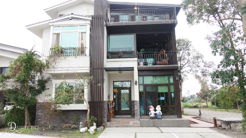
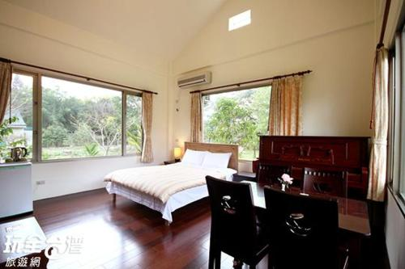
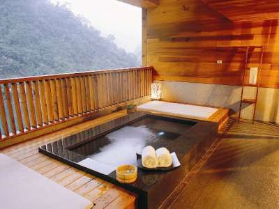
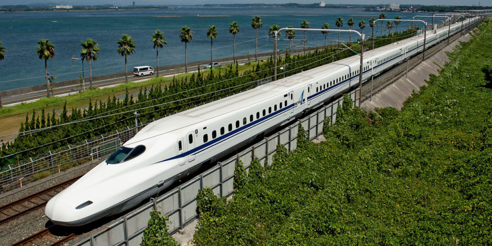
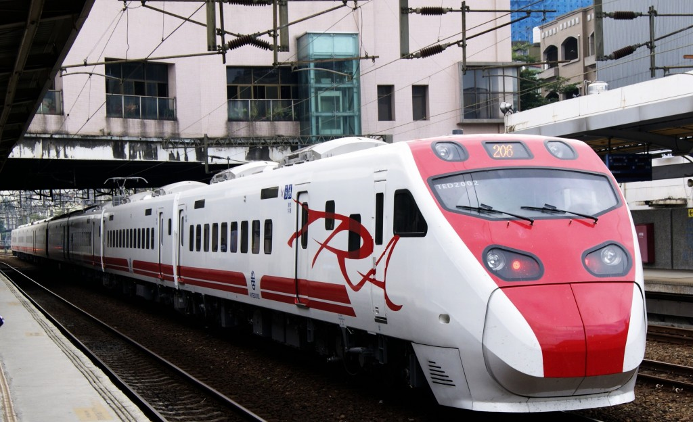
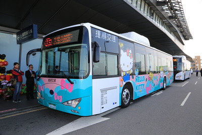
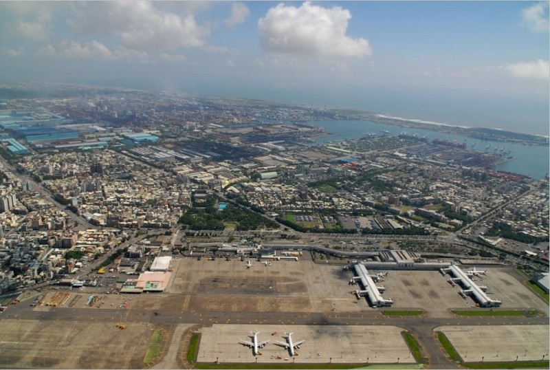

Taiwan's blossoming
cultural city
There are many things to do in Kaohsiung. From hiking in the beautiful monkey mountain to sniffing culture at the Fo Guang Shan Buddha memorial center. On the map you will find our 12 most recommended activities and places to visit when staying in Kaohsiung.
The art center was originally an abandoned warehouse site due to Kaohsiung's shift from industrial city to service city. Due to persistence of local artists, the area was finally released and remade to an arts center.
Lotus lake is an artificial lake and popular tourist destination on the east side of Zuoying District in Kaohsiung. Opened in 1951, it is famous for the lotus plants on the lake and the many temples around the lake.
Qijin district is reached by ferry. It's home to many delicacy stores and tourist attractions such as Chi Jin Mazu Temple, Cihou forest, Cijin wind turbine park etc.
Shou Shan Zoo houses animals from Asia, Africa, Americas and Australia, such as lions, tigers, elephants, black bears and kangaroos. Next to the zoo is a viewpoint from where the whole city of Kaohsiung can be seen. Many couples go here to take pictures.
The night market holds more than thousand stalls with variety, which are mostly food vendors, small eateries also the surrounding businesses of selling non-food items such as accessories or fashion apparel.
Liuhe Night Market is one of the most popular markets in Taiwan where seafood, handicrafts, clothing, knives, cameras and live animals are sold.
Chaishan secret beach is a small beach which can be reached by taking a small hike down a steep hill. It's usually very quiet there and it's a wonderful place to relax.
Fo Guang Shan Buddha Memorial Center is a Mahayana Buddhist cultural, religious and educational museum. The museum is affiliated with Fo Guang Shan, one of Taiwan's largest Buddhist organizations.
Love river runs all the way through Kaohsiung. Next to the river are many small parks.
Shoushan is the one of the mountains where Kaohsiung residents can see natural biological specimens within an hour's drive. There is an extensive system of boardwalk hiking trails that circle the mountain. Hikers can enjoy tea at various tea stations sprinkled throughout the trails.
Kaohsiung Exhibition Center hosts many expos. It has become a help to balance the economic development between the north and the south.
National Kaohsiung Centre for the Arts is a performance arts centre. Many young people go here to dance, talk and hang out in the evening.
Taiwan is heaven for foodies. There are many dishes that are worth trying, from street food to fancy restaurants. There are four foods I feel everyone should try when visiting Kaohsiung.
▹ Show restaurants
Din Tai Fung Kaohsiung Store, B1, No.777 Bo'ai Er Road, Kaohsiung
Yonghe Steamed Dumpling, No. 33, Yancheng St., Yancheng Dist, Kaohsiung
Hou de Fu Steamed Dumpling, No. 156, Ziqiang 3rd Rd., Lingya Dist, Kaohsiung
▹ Show restaurants
Bingo snowice, No.76, Liuhe 2nd Rd.,, Xinxing District, Kaohsiung 800
Gao Xiong Po Po Shaved Ice, No. 135, Qixian 3rd Rd., Yancheng Dist, Kaohsiung
Mang Guo Hao Mang, No.401, Fumin RD, Zuoying Dist, Kaohsiung 813
▹ Show restaurants
Jiang Hao Ji Stinky Tofu King, No. 40, Minsheng 2nd Rd., Xinxing Dist, Kaohsiung
Fu Ji Stinky Tofu, No. 117-7, Wufu 3rd Rd., Lingya Dist, Kaohsiung
Lu Family Stinky Tofu King, No. 253, Zhonghua 3rd Rd, Sanmin Dist, Kaohsiung
▹ Show restaurants
Xinglongju, No.186 Liuhe Second Road, Kaohsiung
Lao Jiang Milk Black Tea, No. 214-3, Sanduo 3rd Rd., Lingya Dist, Kaohsiung
Chuan He Beef Noodles, No. 306, Jiangong Rd., Sanmin Dist, Kaohsiung
Kaohsiung offers enough accommodation possibilities suitable for every type of traveler. There are hostels for backpackers and five-star hotels for the luxury travelers. The most used are hotels, hostels, and AirBnB. However, Taiwan is also home to some unique accommodation types.
Taiwan minsu(homestay) is a unique way of staying in Taiwan as it is manned by the home owners themselves You live with them, learn their local culture and live and eat like they do. This way of experiencing the culture has grown in popularity over the years. Recently, booking websites started appearing where you can arrange this accommodation. Before, it was only possible to do this through a network.
The B&B scene in Taiwan has become a unique experience since each Bed and Breakfast has set its own characteristic reflecting the background and culture of its owner and the local community. Because the amount of travelers to Taiwan has increased continuously over the last years, travelers are looking for affordable places to stay and locals have seen an opportunity.
Relaxing in hot springs is a real Taiwanese favorite. Mostly it's done in pools where you usually have three or four different water temperature pools. There are also natural hot springs which can be found in the mountains and near the sea on the east coast. Next to the bigger hot springs, there are hot spring hotels. Where you can rent a room and spring water is pumped into a tub in your room or on the balcony.
Taiwan has invested a lot in its infrastructure. Next to making life more convenient for Taiwanese citizens, another reason to do this was to stabilize economic development between the north and the south.
Taiwan High Speed Rail has made Taiwan’s public transport system more convenient, because it brings cities and towns closer. Today, passengers can even travel between Taipei and Kaohsiung in one day. Along the “Western Corridor” of Taiwan are 12 THSR stations: Nangang, Taipei, Banqiao, Taoyuan, Hsinchu, Miaoli, Taichung, Changhua, Yunlin, Chiayi, Tainan and Zhuoying. Moving among the corridor’s stations at 300km per hour the THSR offers truly convenient rides.
For more information on Taiwan's High Speed Rail, and to find fares and prizes, visit the THSR website.
Taiwan Railway Administration has an extensive system running along both the east and west coasts. There are no services into the Central Mountains, except tourism branch lines. Trains are comfortable, clean, safe and reliable, with few delays. Reserved seating is available, and food and snacks are served. All major cities are connected by train.
For fares and timetables, see the TRA website.
On the west coast there are very frequent departures (some 24-hour operations), with midweek and late-evening discounts. Most companies serve the same west-coast routes. The main transit points are Taipei, Taichung, Tainan and Kaohsiung.
For more information on Taiwan's bus system, and to find bus schedules, visit the Taiwan bus website.
Kaohsiung international airport is an international airport. It only offers flights within Asia. It's convenient to reach from China and Japan.
For more information on flights going to and leaving Kaohsiung International airport, visit the KIA website.
Planning on visiting Kaohsiung? Fill out the form below and we will send you a custom tailored holiday including the best way to get to Kaohsiung, activity packages and recommended hotels and restaurants. You will also receive tips and tricks on how to get around in Kaohsiung and how to experience local life.